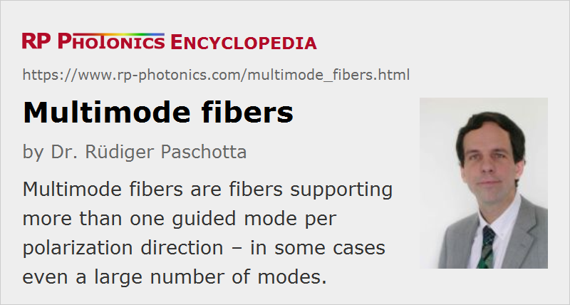

Multimode Fibers
Acronym: MMF
Definition: fibers supporting more than one guided mode per polarization direction
More general term: optical fibers
Opposite term: single-mode fibers
German: mehrmodige Fasern
Category: fiber optics and waveguides
How to cite the article; suggest additional literature
Author: Dr. Rüdiger Paschotta
Multimode fibers are optical fibers which support multiple (often many) transverse guided modes for a given optical frequency and polarization.
The number of guided modes is determined by the wavelength and the refractive index profile. For step-index fibers, the relevant quantities are the core radius and the numerical aperture; the latter depends on the refractive index contrast between fiber core and cladding. In combination, these quantities determine the V number of step-index fibers. For large V values, the number of modes is roughly V2 / 2, when counting both polarization directions. Particularly for fibers with a relatively large core (right-hand side in Figure 1), the number of supported modes can be very high.
Highly multimode fibers can guide light with poor beam quality and high optical power (e.g. generated with a high-power diode bar), but for preserving the beam quality of a light source with higher brightness it can be better to use a fiber with smaller core and moderate numerical aperture, even though efficient launching of light into the fiber may then be more difficult.
Compared with standard single-mode fibers, multimode fibers usually have significantly larger core areas, but also generally a higher numerical aperture of e.g. 0.2–0.3. The latter leads to robust guidance, even under conditions of tight bending, but also to higher propagation losses without bending, as irregularities at the core–cladding interface can scatter light more effectively. The refractive index profile is usually rectangular (→ step-index fibers), but sometimes parabolic (see below).
A basic specification of a multimode fiber contains the core diameter and the outer diameter of a multimode fiber. Common types for fiber-optic communications (see below) are 50/125 μm and 62.5/125 μm fibers, having a core diameter of 50 μm or 62.5 μm, respectively, and a cladding diameter of 125 μm. Such fibers support hundreds of guided modes. There are also large-core fibers with even substantially larger core diameters of hundreds of micrometers.
Launching light into a multimode fiber is comparatively easy, because there are larger tolerances concerning the location and propagation angle of incident light, compared with a single-mode fiber. On the other hand, the spatial coherence of the fiber output is reduced, and the output field pattern can hardly be controlled, for reasons explained below.
Figure 2 shows the electric field profiles of the guided modes of a step-index fiber, as calculated for one particular wavelength. There is a fundamental mode (LP01) with an approximately Gaussian intensity distribution, and a number of higher-order modes with more complicated spatial profiles. Each mode has a different β value. Any guided field distribution can be considered as a superposition of the guided modes.
The total electric field distribution anywhere in a multimode fiber is a superposition of contributions from the different modes. The intensity profile depends not only on the optical powers in all the modes, but also on the relative phases, and there can be constructive or destructive interference of different modes at particular locations in the fiber. Both the powers and optical phases are initially determined by the launching conditions, and the relative phases (and thus the interference conditions) evolve further due to the mode-dependent propagation constants. Therefore, the more or less complicated intensity pattern changes all the time, typically with significant changes occurring within a propagation length of well below 1 mm. Also, the relative phases changes with any modifications of the launching conditions, bending or stretching of the fiber, changes of the wavelength or temperature, etc.
Figure 3 shows an example in the form of animated graphics, where the different frames represent intensity distributions occurring at the end of a multimode fiber when the input beam position is varied.

Note that for light with a broad optical bandwidth (e.g. for a white light source) such complicated intensity patterns are not observed, if only the intensity is detected without distinguishing different spectral components. This is because the shape of the intensity pattern is different for each wavelength component, so that contributions from different wavelengths are averaged out. The longer the fiber, the lower is the optical bandwidth required to achieve this averaging.
Required Beam Quality for Launching Light into a Multimode Fiber
Compared with a single-mode fiber, a multimode fiber allows for much easier launching of light, particularly if it supports many guided modes. For efficient launching, one has to fulfill two conditions:
- The input light should essentially only hit the core, not the cladding.
- The input light should not contain significant amounts of power propagating with angles larger than arcsin NA.
If the M2 factor of the input light is sufficiently small, it is possible to fulfill these two conditions simultaneously. The maximum M2 factor for efficient launching of a beam with super-Gaussian profile can be estimated from the following formula:
This holds if both the spatial beam profile and the angular distribution (i.e., the profile in Fourier space) are well adapted for launching, with a kind of super-Gaussian shape. For Gaussian distributions, the M2 factor needs to be somewhat lower. For more details and example cases, see Ref. [6].
Multimode Fibers for Transporting Laser Light
Multimode fibers are used for the transport of light from a laser source to the place where it is needed, particularly when the light source has a poor beam quality and/or the high optical power requires a large area of the fiber core. For example, light from stationary high-power lasers of various types can be sent to material processing stations for cutting or welding, where e.g. a robot moves a laser head mounted at the end of a fiber cable. Also, fiber-coupled high-power diode bars and diode stacks use multimode fibers, as their beam quality is far from diffraction-limited. Fiber coupling is useful because it allows one e.g. to separate the pump diodes and their cooling arrangement from the laser head of a diode-pumped solid-state laser. However, fiber-coupled laser diodes are more expensive, and depending on the beam shapers used, there can be some significant loss of brightness.
For such applications, the number of guided modes should often not be larger than necessary for efficient launching, since otherwise the laser radiation might be distributed over a large than necessary number of modes, and the beam quality and brightness would be reduced.
In practice, a simple step-index refractive profile is normally used. The numerical aperture is often held constant at some standard value such as 0.22, and the core diameter is chosen according to the beam quality of the light source. Common values for the core diameter are 50, 100, 200, 400, 600 and 800 μm.
Multimode Fibers for Optical Communications
For short-distance optical fiber communications, multimode fibers are often preferred over single-mode fibers, because they can accept light from simpler light sources (e.g. light-emitting diodes = LEDs), and their alignment (e.g. in fiber connectors) is less critical. However, the possible data rates and/or transmission distances achievable with such fibers is limited by the phenomenon of intermodal dispersion: the group velocity depends on the propagation mode, so that ultrashort pulses propagating in a multimode fiber may be split into several pulses with different arrival times, possibly smearing out any transmitted signal. This effect can be greatly reduced by making multimode fibers with a parabolic refractive index profile (graded-index fibers, Figure 4), so that a substantially larger bandwidth–distance product can be achieved. However, unavoidable imperfections still set limits. There are ISO standards like OM1, OM2, OM3, OM4 and OM5, which quantify the residual level of intermodal dispersion, limiting the transmission bandwidth (or the bandwidth–distance product). Highest performance is achieved e.g. with OM4 50/125-μm laser-optimized fibers, having a very precisely controlled refractive index profile. The data transmitter then normally contains an 850-nm VCSEL.
See the article on graded-index fibers for more details.
For long-haul data transmission, single-mode fibers are preferable, as they do not exhibit any intermodal dispersion, whereas the system cost is substantially higher.
The International Telecommunications Union (ITU) has developed a number of standards for various types of fibers as used for optical fiber communications. The standards for multimode fibers are:
| Name | Title |
|---|---|
| G.651 (02/98) | Characteristics of a 50/125 μm multimode graded index optical fibre cable |
| G.651.1 (07/07) | Characteristics of a 50/125 μm multimode graded index optical fibre cable for the optical access network (pre-published) |
Active Multimode Fibers
Some high-power fiber amplifiers are based on multimode fibers, because these can have larger mode areas (→ large mode area fibers). Such fibers have only a few guided modes, i.e., they still have a relatively small core compared to most other multimode fibers. It is often possible to obtain a nearly diffraction-limited output by launching the input signal light into the fundamental mode and by minimizing mode mixing.
Materials and Fabrication
Various materials can be used for multimode fibers. The most common multimode glass fibers are silica fibers, where a pure silica core is surrounded by a region which is doped with some index-lowering agent (e.g. fluorine). Alternatively or in addition, the core can have some additional doping, e.g. with germania, to increase the refractive index. Particularly for large-core fibers, the plasma outside deposition (POD) method allows the efficient fabrication of fluorine-doped “depressed index claddings” around a pure silica core.
There are also other glasses, e.g. fluoride and chalcogenide glasses for guiding light with longer wavelengths, and polymers (polymer optical fiber, POF). Such materials require adapted fabrication techniques.
Another possibility is to use photonic crystal fibers (PCF), which can be made from different glasses and can have, e.g., an air cladding to achieve a very high numerical aperture.
Suppliers
The RP Photonics Buyer's Guide contains 37 suppliers for multimode fibers. Among them:
Questions and Comments from Users
Here you can submit questions and comments. As far as they get accepted by the author, they will appear above this paragraph together with the author’s answer. The author will decide on acceptance based on certain criteria. Essentially, the issue must be of sufficiently broad interest.
Please do not enter personal data here; we would otherwise delete it soon. (See also our privacy declaration.) If you wish to receive personal feedback or consultancy from the author, please contact him e.g. via e-mail.
By submitting the information, you give your consent to the potential publication of your inputs on our website according to our rules. (If you later retract your consent, we will delete those inputs.) As your inputs are first reviewed by the author, they may be published with some delay.
Bibliography
| [1] | N. Riesen and J. D. Love, “Dispersion equalisation in few-mode fibres”, Opt. Quantum Electron. 42 (9-10), 577 (2011) |
| [2] | N. Bhatia et al., “Single LP0,n mode excitation in multimode fibers”, Opt. Express 22 (14), 16847 (2014), doi:10.1364/OE.22.016847 |
| [3] | K. Krupa et al., “Spatial beam self-cleaning in multimode fibres”, Nature Photon. 11, 237 (2017), doi:10.1038/nphoton.2017.32 |
| [4] | A. W. Snyder and J. D. Love, Optical Waveguide Theory, Chapman and Hall, London (1983) |
| [5] | Standards of the International Telecommunication Union (ITU), http://www.itu.int/ |
| [6] | R. Paschotta, tutorial on "Passive Fiber Optics", Part 4: Multimode Fibers |
See also: fibers, modes, multimode beams, graded-index fibers, single-mode fibers, fiber-coupled diode lasers, photonic crystal fibers, double-clad fibers, large-core fibers, V number, intermodal dispersion, waveguides, The Photonics Spotlight 2016-09-12
and other articles in the category fiber optics and waveguides
|  |
If you like this page, please share the link with your friends and colleagues, e.g. via social media:
These sharing buttons are implemented in a privacy-friendly way!